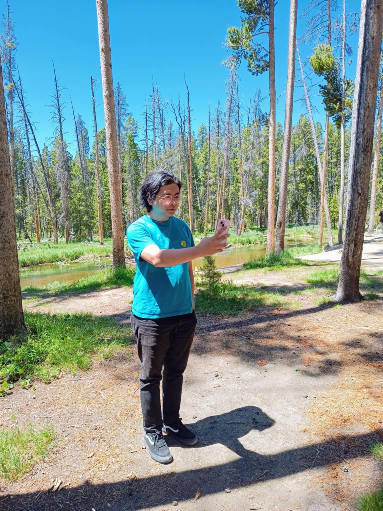

I am a second-year Ph.D student at Drexel University. My advisor is Jonah Blasiak.
You can reach me at jlt383 ( something goes here ) drexel ( something goes here ) edu. My personal (non-math) website is at jasperty.net.
CV.
Here's a small collection of things I've written, so far. Some links are broken due to laziness.
Notes I'm writing for classes I'm taking or topics I'm learning.
Written for the Winter 2024 class "Positive Polynomials and Sums of Squares".